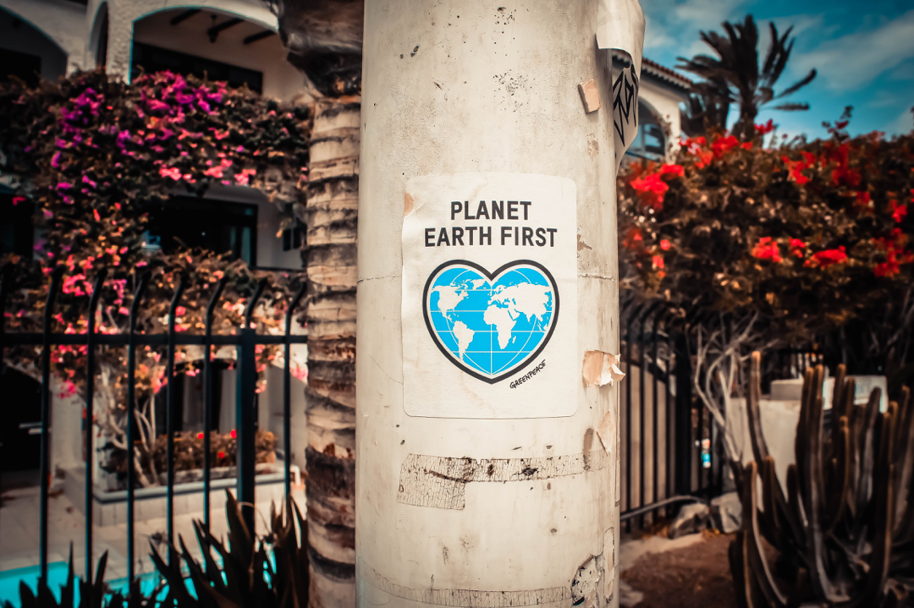
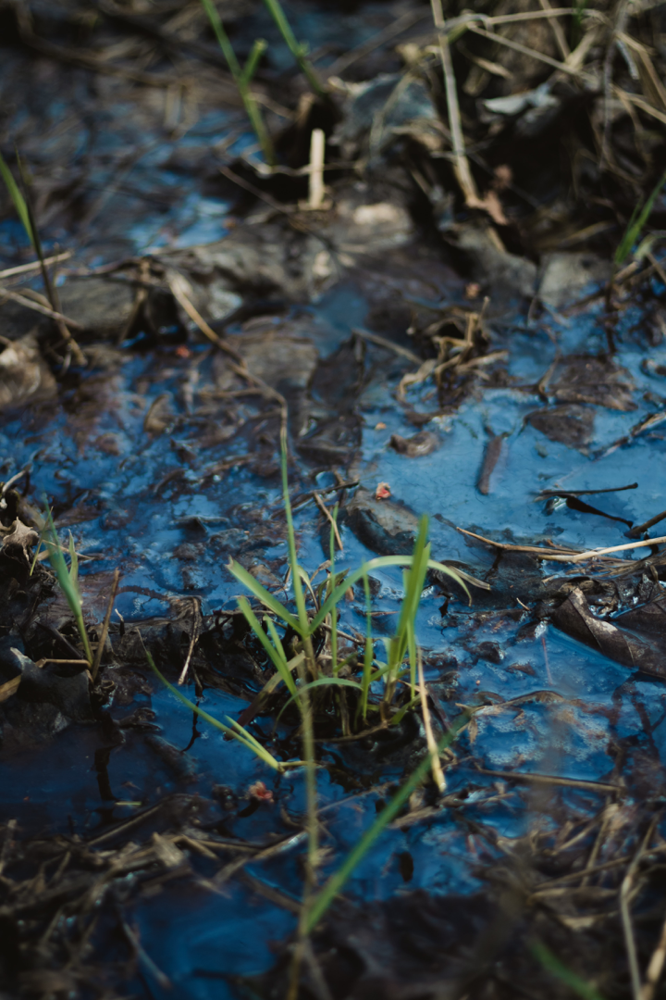

SAVE ENERGY

There are many different ways to reduce your household’s energy use. It can be really easy.
The two major motives for conserving energy are to save on utility bills and protect the environment.
Here are 5 most common ways to conserve energy and save electricity in your home.
- Replace your light bulbs
- Wash clothes with cold water
- Turn off electronics when not used
- Reduce the water heating expenses
- Unplug battery charges
when not used
SAVE THE PLANET
We are the first generation to know we’re destroying the world, and we could be the last that can do anything about it. Speaking up is one of the most powerful things you can do especially if it’s to the right people. Talk to your MP. Tell them to commit to action to protect our natural world.
One of the most efficient ways of lowering your environmental impact is by travelling responsibly. This means, whenever you can, choosing a more sustainable way to get from A to B - walk or cycle when you can.
Moving away from a meat-dominated diet towards a more plant-based diet can lower your impact on the environment. Vegetarian and vegan foods are massively on the rise and becoming far more common in restaurants, cafes and supermarkets, so you’ll rarely struggle. [wwf.org.uk]
SAVE WATER
Next to air, water is the most important element for the preservation of life. Water is a finite commodity which, if not managed properly, will result in shortages in the near future. Water conservation can go a long way to help alleviate these impending shortages. [volusia.org]
A typical shower uses five to ten gallons of water a minute. Limit your showers to the time it takes to soap up, wash down and rise off.
Saving water is important to help protecting our earth. It is not helpful to start from 1 to 100, but small steps make the journey to a eco-friendly life easier as expected.